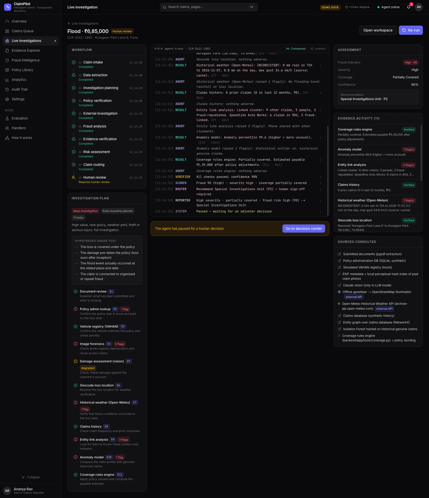
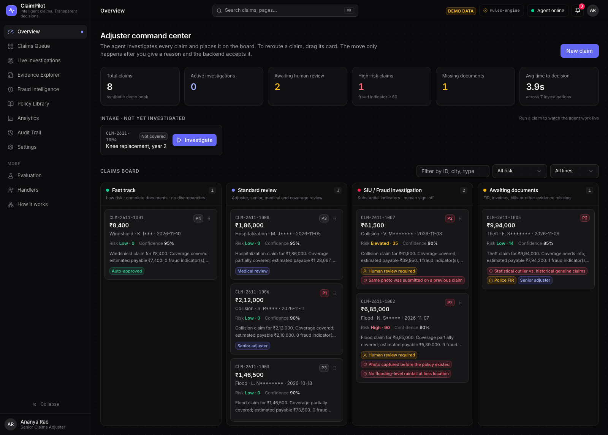
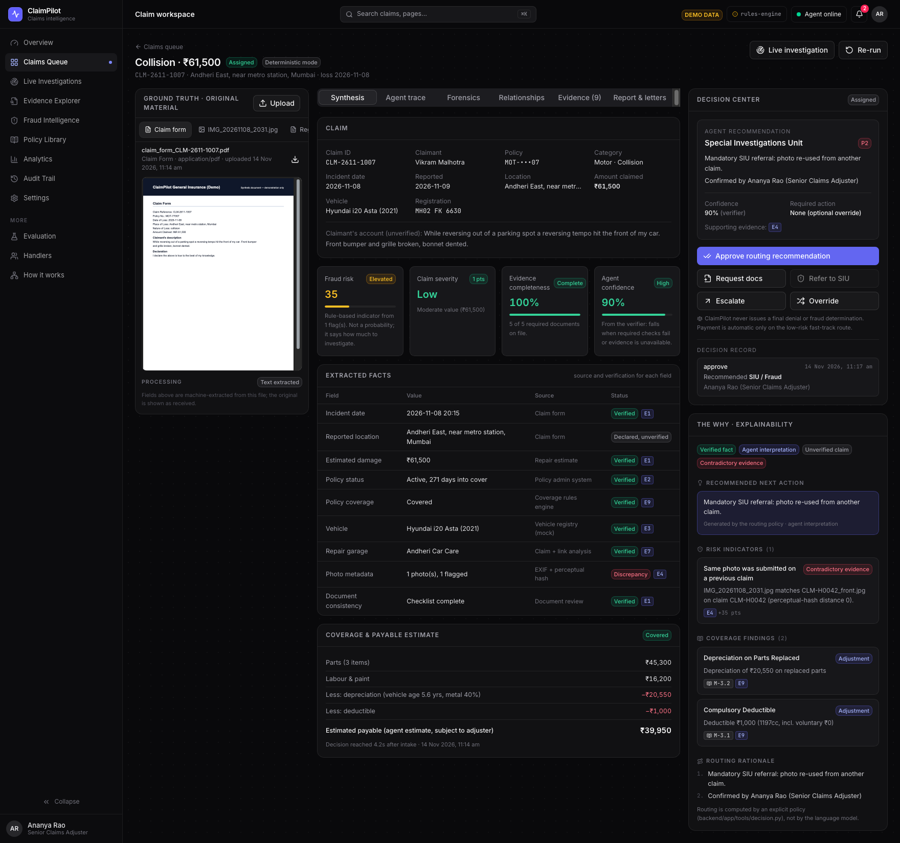
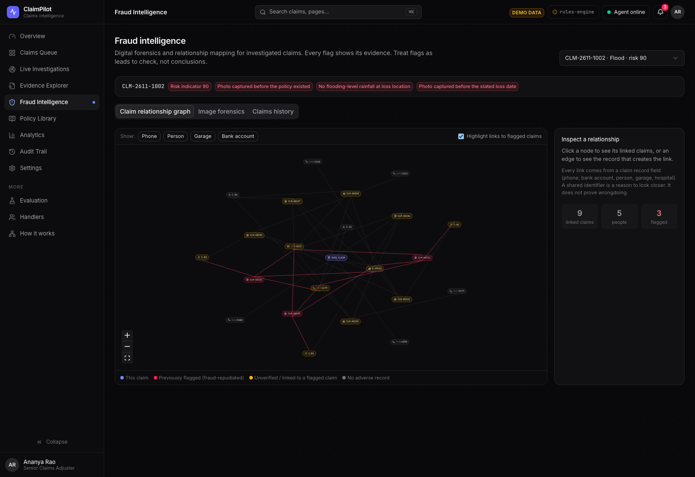
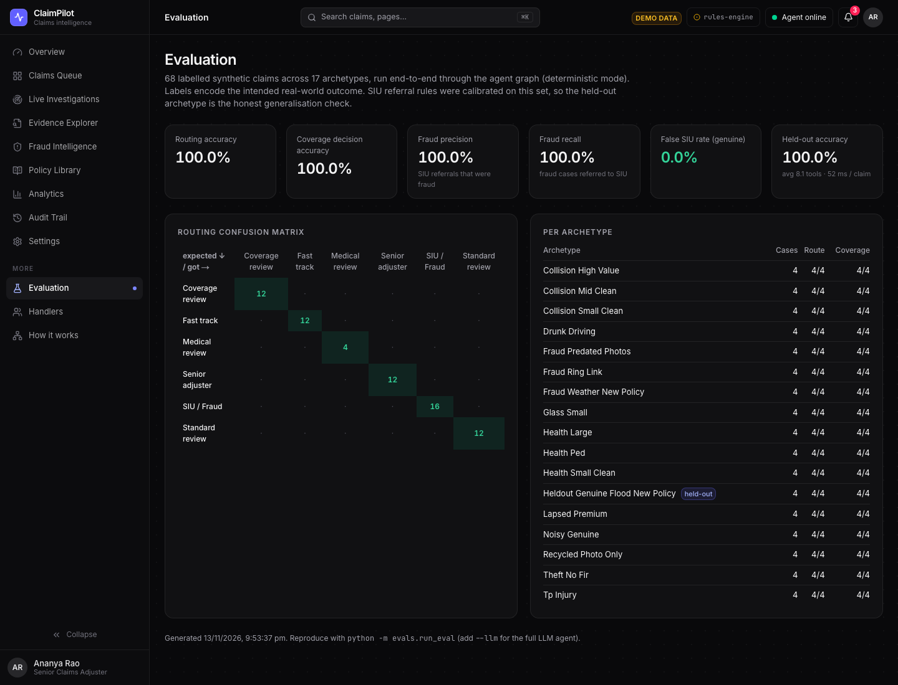

Intelligent claims.
Transparent decisions.
ClaimPilot is an autonomous agent that reads an insurance claim, plans an investigation, calls real tools, checks its own work, and recommends where the claim should go. It cites evidence for every conclusion and stops for a human before any denial or fraud referral.

Triage takes days. ClaimPilot takes seconds.
Claims teams read every document by hand, check policy wording clause by clause, and rely on instinct to spot fraud. ClaimPilot does the investigation and leaves the judgement to people.
Today
- ✕Every claim is read manually, simple or not
- ✕Fraud checks depend on the handler's instinct
- ✕Coverage calls vary from handler to handler
- ✕Missing documents stall claims silently
- ✕"Why was this flagged?" is hard to answer
With ClaimPilot
- ✓Low-risk, covered, complete claims are approved straight through
- ✓Weather, photo metadata, reused images and shared identifiers are checked on every claim
- ✓A rules engine applies the policy wording and shows the arithmetic
- ✓The agent requests documents, waits, and re-plans when they arrive
- ✓Every score traces to flags, and every flag to evidence
A real agent loop, not a single prompt
A LangGraph state machine. Claude decides what to investigate and what the evidence means. Auditable code turns evidence into scores and routes. People sign off on denials and fraud referrals.
CLAUDE
CLAUDE
CLAUDE + TOOLS
CODE
CODE
CLAUDE
HUMAN
CODE
[11:14:28] PLANNER Deep investigation plan: 11 steps [11:14:29] RESULT Policy admin lookup: active; premium paid; 6 days after start → Loss within 15 days of inception +22 [11:14:30] RESULT Image forensics: 2 photos, 2 flagged → EXIF date 2026-10-12 precedes policy start +30 [11:14:31] RESULT Historical weather (Open-Meteo): INCONSISTENT, 0 mm rain in 72h +30 [11:14:32] RESULT Entity link analysis: 9 linked claims, 5 people, 3 fraud-repudiated +25 [11:14:33] VERIFIER All checks passed; confidence 90% [11:14:33] ROUTER Recommend Special Investigations Unit (P2), human sign-off required [11:14:33] SYSTEM Paused, waiting for an adjuster decision
A glassbox dashboard for adjusters
The agent is visible. Every plan, tool call, result and decision streams from the backend and opens down to its raw input and output.
Every claim, triaged and on the board
Fast track, standard review, SIU and awaiting-documents columns show live risk and confidence. To reroute a claim, drag it; you must give a reason, and the card only moves after the backend accepts.
- Real metrics from the database, labelled as demo data
- Honest service status: connected, mock or not configured
- Global search, notifications, filters


Ground truth, synthesis, and the why
Original documents sit beside what the agent extracted, and each fact is marked verified, discrepancy or unverified. Each risk flag links to its evidence, and each coverage finding opens the exact policy clause.
- Decision center: approve, request documents, refer to SIU, escalate, override
- Overrides require a reason and are stored next to the original recommendation
- ClaimPilot never issues a final denial on its own
Forensics and relationship mapping
Photo EXIF time and GPS, editing software and perceptual-hash matches against every past claim photo. An interactive graph links claims through shared phones, bank accounts, people and garages, and every edge shows the record that created it.
- Flags are leads to investigate, not proof of wrongdoing
- Reverse image search shown as "not configured", never faked

13 investigation tools
Deterministic, auditable functions. The model chooses which to call and interprets the results; it never invents the facts they return.
Coverage rules engine
Clause-cited checks with a line-by-line payable: depreciation, deductible, IDV cap, waiting periods, room-rent proportionate deduction, co-pay.
Historical weather
Live Open-Meteo archive API: did the claimed flood, storm or hail actually happen at that place and date?
Image forensics
EXIF capture time and GPS against the loss and policy dates, editing software, and perceptual-hash reuse detection.
Entity link analysis
NetworkX graph over claims, people, phones, bank accounts, garages and hospitals; surfaces clusters and hotspots.
Anomaly model
Isolation Forest trained on historical genuine claims scores how unusual a claim's profile is.
Document review
PDF extraction, required-document checklist, and cross-checks such as claimed amount vs. bill, or FIR date vs. loss date.
Policy admin & wording
Policy status, period, premium and insured assets; semantic search over the policy wording.
Damage assessment
Claude vision describes the damage and checks it against the claimant's account (LLM mode).
Registry, geocoding, history, ticketing
Vehicle registry (mocked), OpenStreetMap geocoding, claim frequency, and ticket/SLA/notification actions.
Eight claims that exercise every branch
Motor and health lines. All data is synthetic; weather data is real.
| Scenario | What the agent finds | Outcome |
|---|---|---|
| Cracked windshield, ₹8,400 | Light plan, 5 checks, covered after deductible | Auto-approved |
| Basement flood, policy 6 days old, ₹6.85 L | 0 mm rain, photos predate the policy, edited image, fraud-ring link | SIU · human review |
| Monsoon street flood, Chennai | Weather confirms; engine damage excluded without Engine Protect | Partial cover |
| Knee replacement, 15 months into cover | Clause H-4.3: 24-month specified-disease wait | Coverage review |
| Overnight vehicle theft, no FIR | Requests the FIR, pauses, re-plans on upload | Awaiting documents |
| Flyover collision, rider injured | Third-party bodily injury (MACT exposure) | Critical · senior |
| Parking-lot fender bender | Photo matches one from a 2025 claim (perceptual hash) | SIU |
| Emergency appendectomy, deluxe room | Room rent above the 1% cap, so a proportionate deduction applies | Medical review |
Measured, with the caveats stated
68 labelled synthetic claims across 17 archetypes, each run end to end through the agent graph in deterministic mode.
Read these numbers honestly. The data and labels are synthetic and were written by the same team as the rules. The first run scored 47% routing (a harness bug plus two real calibration gaps), and the SIU rules were then calibrated on this set, so the scores are optimistic. A held-out archetype written after calibration passes. Real-world accuracy would need real claims.

Built to be trusted
PII masking
Phones, emails, PAN, Aadhaar, account numbers and names become stable pseudonyms before any LLM call. Link analysis still works.
Humans decide
Every SIU referral, every denial and any low-confidence decision needs an adjuster, and overrides are audited.
No fabricated reasoning
The UI shows plans, tool calls, results and decisions. It never shows invented "thoughts".
Explainable scores
Every fraud point maps to a flag, every flag to evidence, and every coverage call to a clause.
Graceful degradation
A failed tool lowers confidence instead of crashing. An LLM outage falls back to the rules plan.
Never accuses
Claimant letters contain no fraud language. Indicators go to investigators only.
One command, locally
Requires Python 3.12+ and Node.js 20+. Without an API key it runs in deterministic mode: same graph, tools, scoring and gates, with a rules-based planner.
# clone and start (installs, seeds demo data, builds, runs) git clone https://github.com/niranjan19m-source/claimpilot.git cd claimpilot # optional: enable the full LLM agent export ANTHROPIC_API_KEY=sk-ant-... ./start.sh --reset # → http://localhost:3000